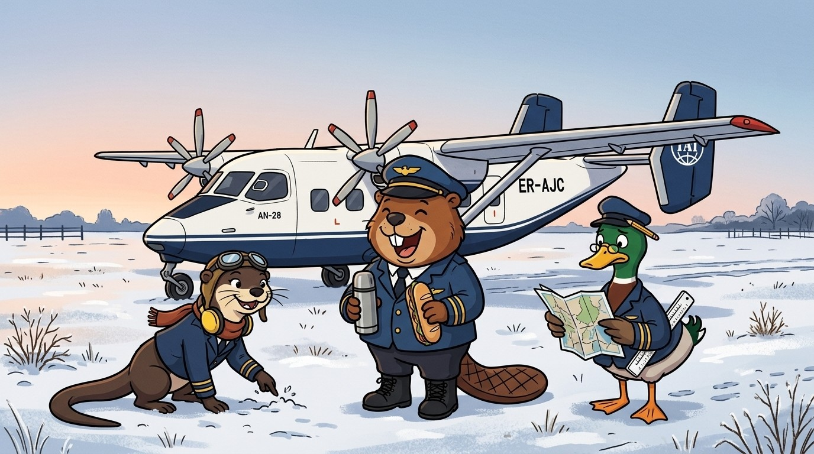
Своїм ходом через пів світу
Кінець 90-х. Роботи вдома немає, рейсів дедалі менше. Зате з глухих стоянок колишнього Союзу визволили кілька Ан-28, перефарбували, поміняли двигуни й гвинти, і тепер вони потрібні в Африці. А Африка далеко, і літаки туди мають дістатися своїм ходом.
Цей тур іде за оповіданням Flying Elk «Ан-28, перегон літака в Африку». Автор називає його вигадкою, а повністю прочитати можна на його Patreon. Командир налітав тисячі годин на Ан-2 і Ан-28, але перегоном за кордон ще не займався. Другий пілот має півсотні годин на типі і ще ніколи по-справжньому не вів радіообмін англійською. Позивний TET 2804. На борту два техніки, додатковий бак, запасний двигун на рамі, холодильник, бо «там жарко», і папка ксерокопій схем. Сім етапів, три дні, від мокрого снігу Києва до червоної землі Найробі.
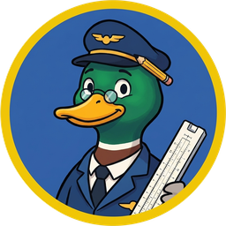
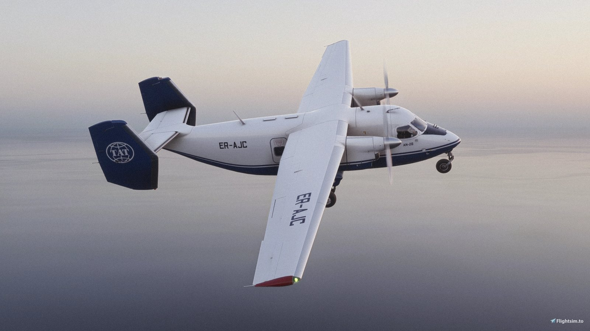
Три дні перегону
Карта маршруту
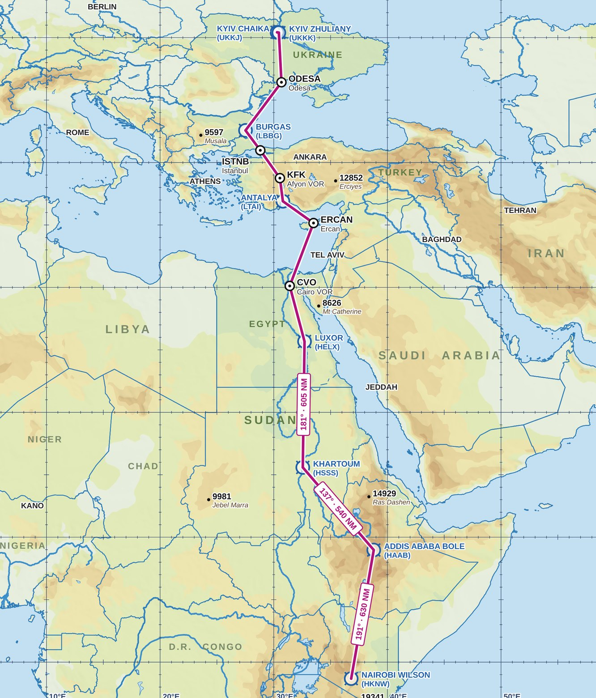
7 етапів
звіту про політ, 27–29 листопада
| № | ДАТА | МАРШРУТ | КМ | ВИЛІТ–ПОС. | НАЛІТ | ЩО ЧЕКАЄ |
|---|---|---|---|---|---|---|
| 1 | 27.11 | UKKJ → UKKK | 15 | 10:12–10:35 | 0:23 | Сніг на ґрунті, кромка 70 м |
| 2 | 27.11 | UKKK → LBBG | 1031 | 17:00–20:35 | 3:35 | Обледеніння, Одеса, Румунія |
| 3 | 27.11 | LBBG → LTAI | 960 | 21:00–23:45 | 2:45 | Нічне море, дуга 12 миль |
| 4 | 28.11 | LTAI → HELX | 1400 | 09:00–13:45 | 4:45 | Море без плота, дод. бак |
| 5 | 28.11 | HELX → HSSK | 1185 | 14:30–18:05 | 3:35 | Пустеля, УКХ мовчить |
| 6 | 28.11 | HSSK → HAAB | 998 | 19:30–23:05 | 3:35 | Ніч, R611, FL170 |
| 7 | 29.11 | HAAB → HKNW | 1211 | 10:30–15:05 | 4:35 | Грози, «Вілсон» |
| Разом | 6810 | 3 дні | 23:13 | з них уночі 10:15 |
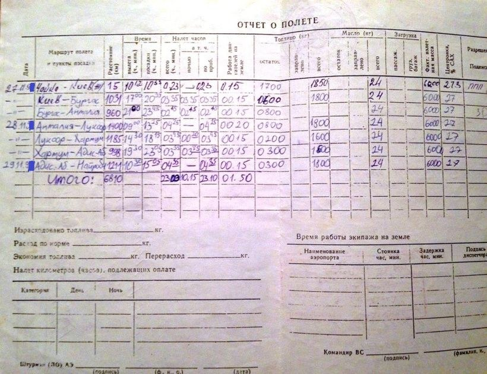
Карти етапів 1–4
висоти вершин у футах
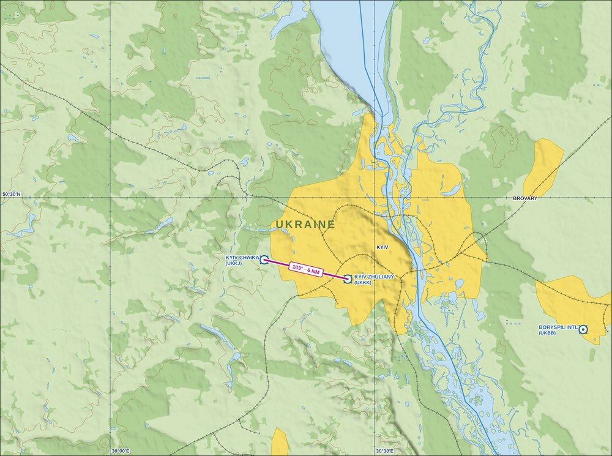
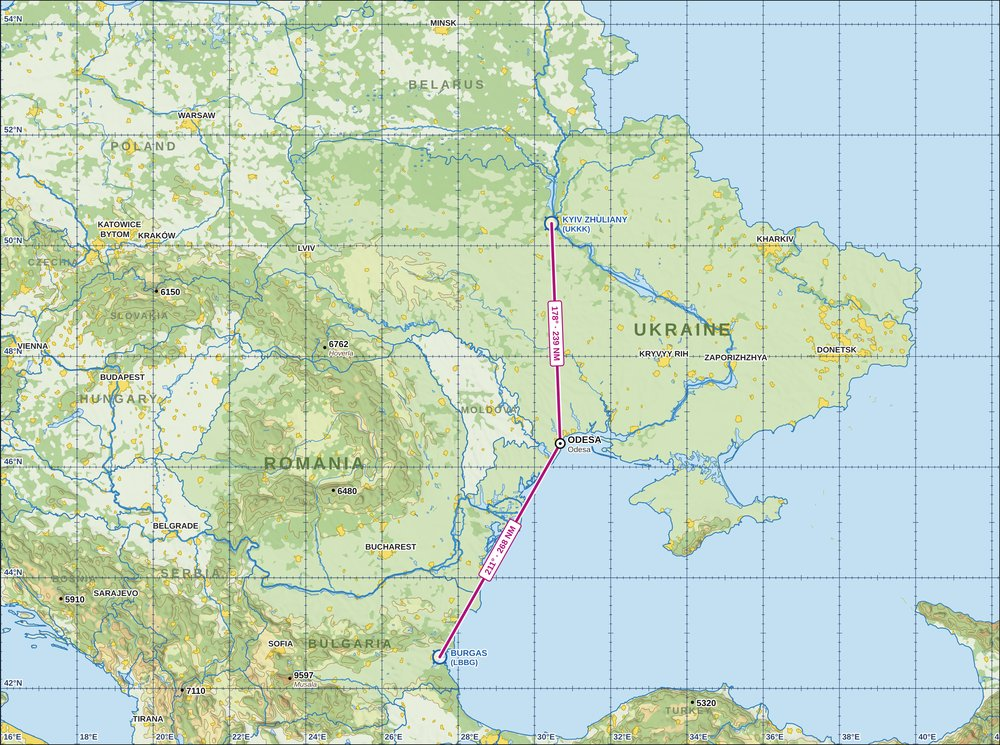
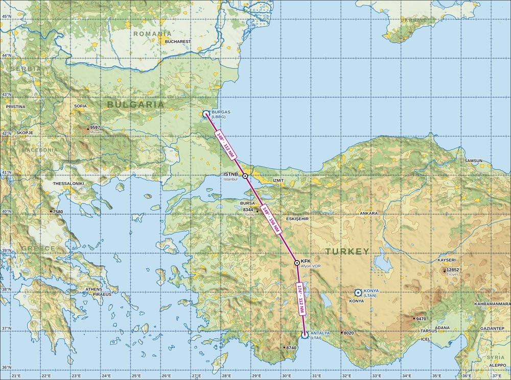
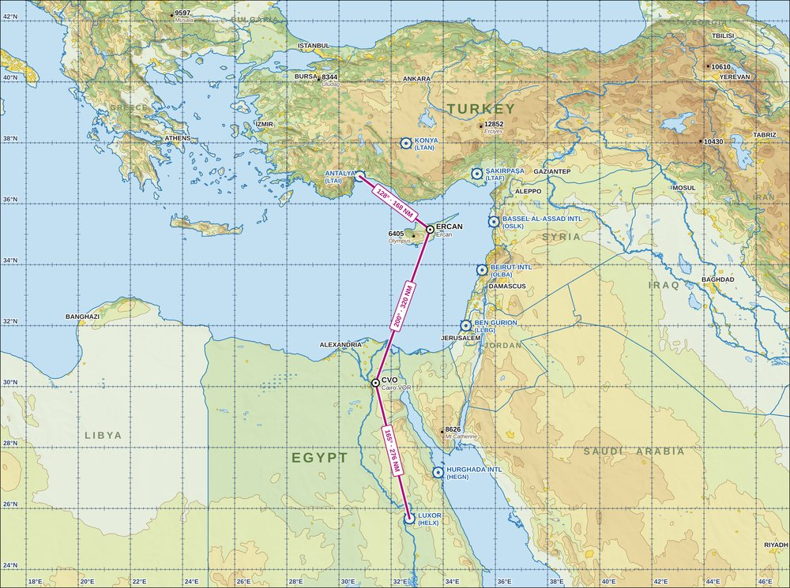
Карти етапів 5–7
висоти вершин у футах
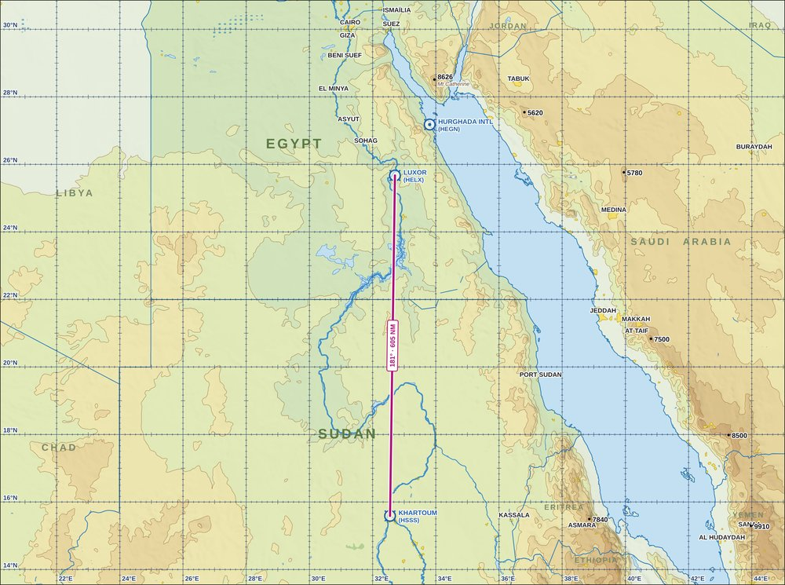
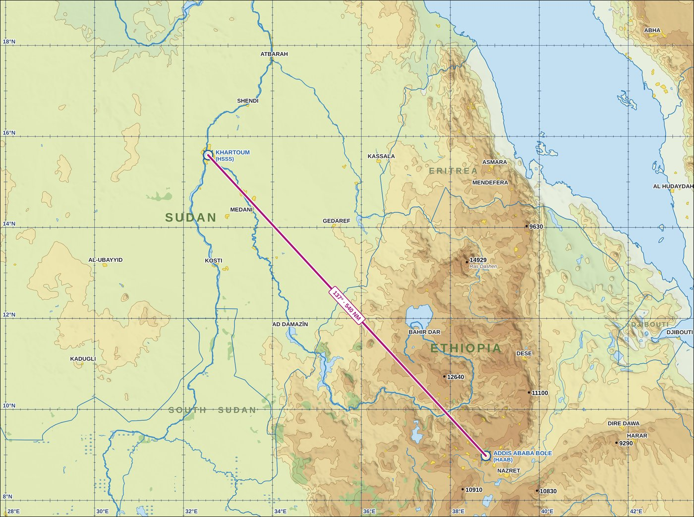
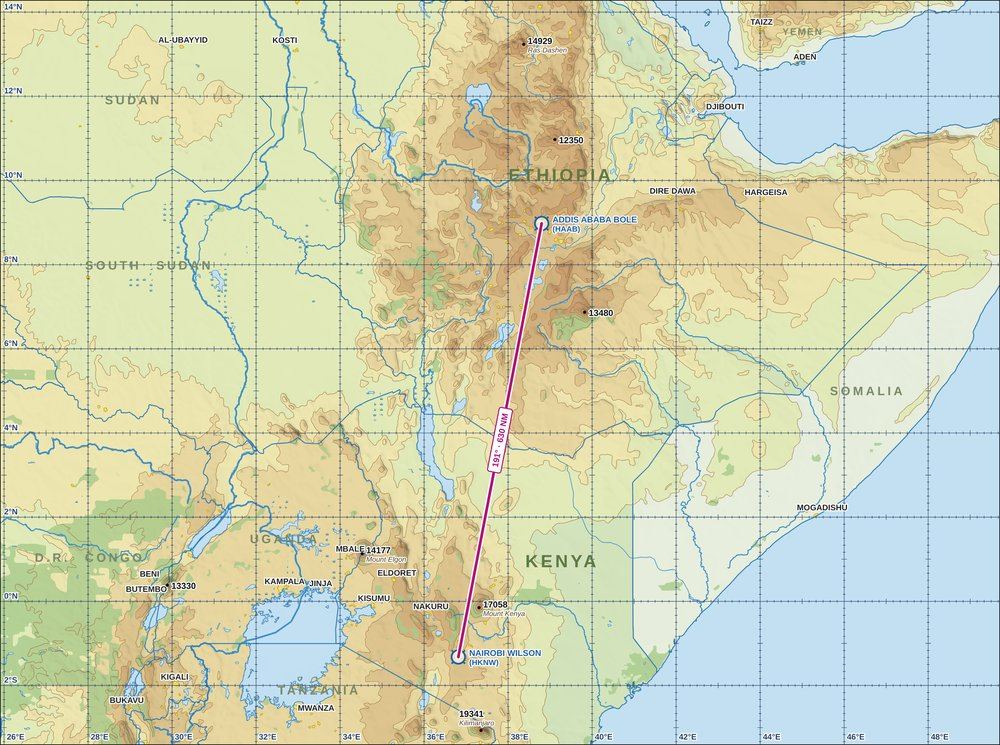
Літак туру
«Аерофлот» колись попросив у КБ Антонова максимально простий літак, тож автопілот, локатор і курсо-глісадна система з проєкту зникли. Лишилися два потужні двигуни, довге планерне крило, великі двостулкові двері і крісла, що складаються. Пасажирський за хвилину стає вантажівкою.
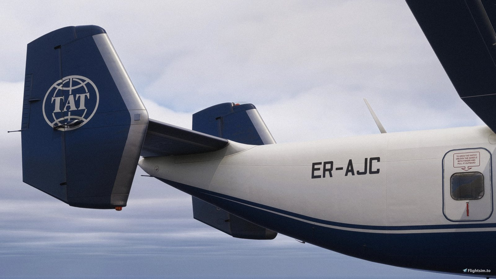
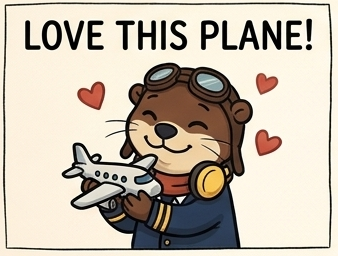
Правила та поради
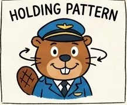
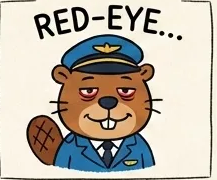
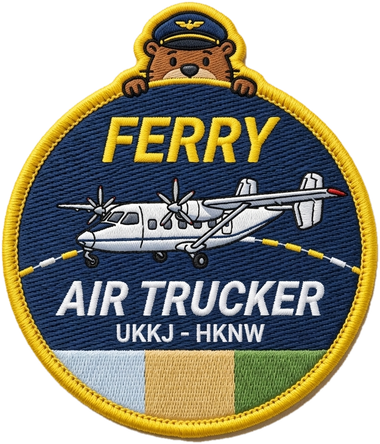
Після всіх семи етапів ви отримаєте почесний знак Ferry Air Trucker, а ваше ім'я впишуть у бортовий журнал поруч із Бобром, Видрою та Качуром. Ан-28 з оповідання пропрацював в Африці понад десять років. Нехай ваш теж.
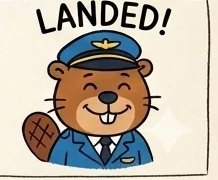